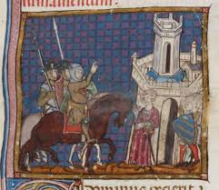
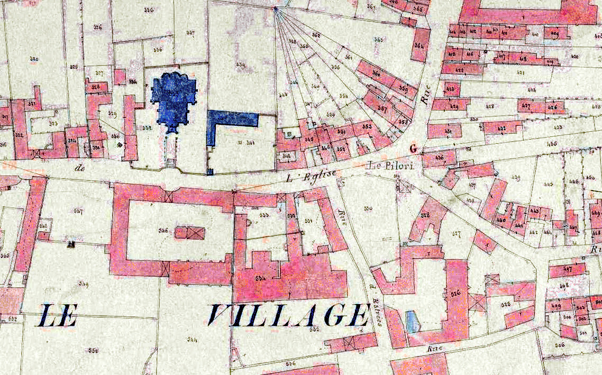
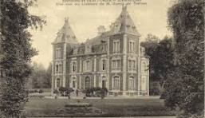
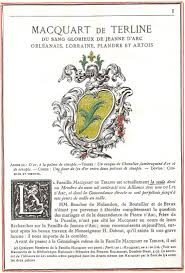
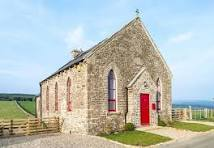

Introduction
Plongez dans l'histoire fascinante d'une lignée familiale qui a traversé les siècles et façonné l'histoire locale. Les archives des Macquart de Terline nous offrent un témoignage précieux de la vie noble provinciale française du XVIIe siècle à nos jours.
Ce voyage à travers le temps nous permettra de découvrir des documents authentiques, des correspondances privées et des témoignages qui éclairent non seulement l'histoire d'une famille, mais aussi celle d'une région tout entière.
Origines et implantation
La famille Macquart s'est établie sur les terres de Terline au cours du XVIe siècle, dans un contexte où la noblesse provinciale consolidait son emprise sur les territoires ruraux. Le fief, situé dans l'actuel Nord-Pas-de-Calais, constituait un domaine stratégique entre les influences françaises et flamandes.
Les premiers documents cadastraux retrouvés dans les archives départementales attestent de l'étendue considérable des terres Macquart :
- Des terres agricoles fertiles s'étendant sur plus de 300 hectares
- Plusieurs hameaux et villages sous juridiction seigneuriale
- Des forêts et étangs constituant d'importantes ressources naturelles
Les autres possessions comprennent les domaines d'Ophove, Maugré, Mernes et Soisseval. Le siège de la seigneurie de Soisseval se situait à Merris, près de Bailleul.
La famille a conservé son influence malgré la Révolution française, préservant ses terres et son château. Cela témoigne de leur capacité à s’adapter aux changements politiques tout en maintenant leur héritage.
Le Château de Blendecques
Au XVIIIe siècle, la famille Macquart de Terline a acquis le château de Blendecques. Ce château est devenu le centre symbolique et stratégique de leur pouvoir et demeure aujourd’hui un témoignage important de leur histoire.
Ils y ont vécu et y ont organisé leurs affaires seigneuriales pendant plusieurs générations, tout en accueillant des visiteurs et en supervisant leurs terres. Le château a également servi de cantonnement militaire pendant la Première Guerre mondiale et a été un lieu de soutien à la Résistance durant la Seconde Guerre mondiale.
Le Blason
Le blason de la famille Macquart de Terline représente une palme avec deux lions et la devise Consilio et virtute. Il symbolise les valeurs de loyauté, honneur et devoir qui ont guidé la famille à travers les siècles.
Ces armoiries reflètent la tradition noble de la famille et leur rôle dans la région, soulignant leur identité et leur prestige.
Croyances et traditions
La famille Macquart de Terline est catholique et a toujours montré son attachement aux traditions religieuses en finançant des églises et des chapelles dans ses terres. Ces actions montrent leur volonté de préserver les valeurs et le patrimoine de la région.
Leur pratique religieuse influençait aussi la vie sociale locale, en soutenant les fêtes et cérémonies religieuses et en consolidant les liens avec les habitants de leurs domaines.
Les Guerres mondiales
Pendant la Première Guerre mondiale, le château familial a servi de cantonnement militaire. Durant la Seconde Guerre mondiale, la famille est restée présente sur ses terres et a soutenu la Résistance locale.
Ces événements ont profondément marqué l'histoire de la famille et de son fief, tout en témoignant de leur engagement et de leur rôle dans la région au cours du XXᵉ siècle.

Autres ressources :
Le guide du MacquartJehan de Terline le premier kamikaze de l'histoire
Quiz interactif
Testez vos connaissances sur la famille Macquart de Terline !